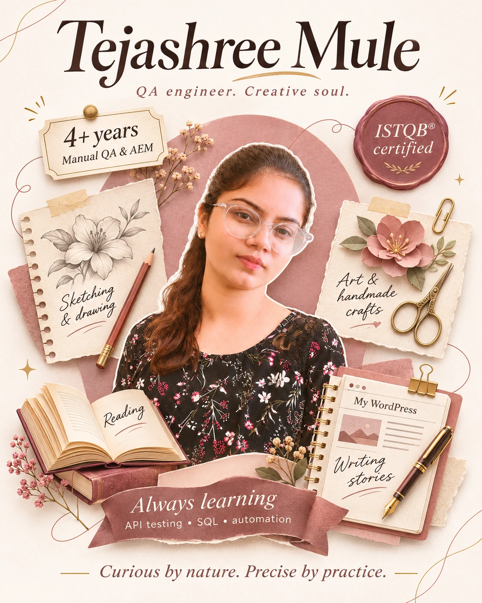
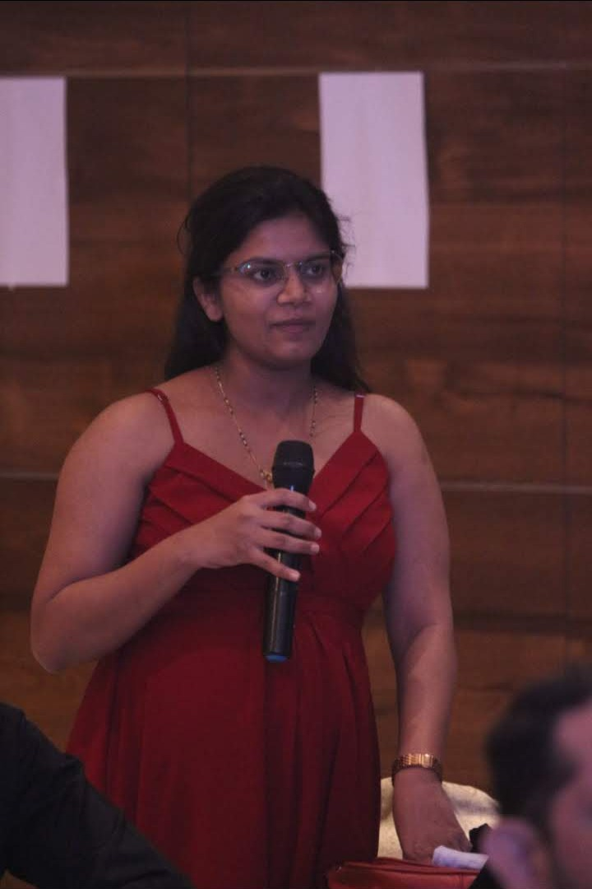
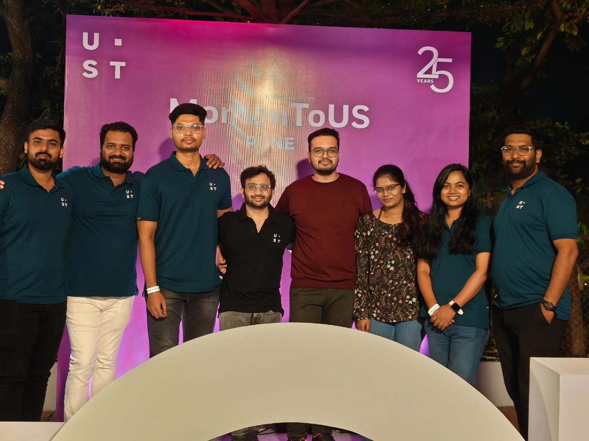
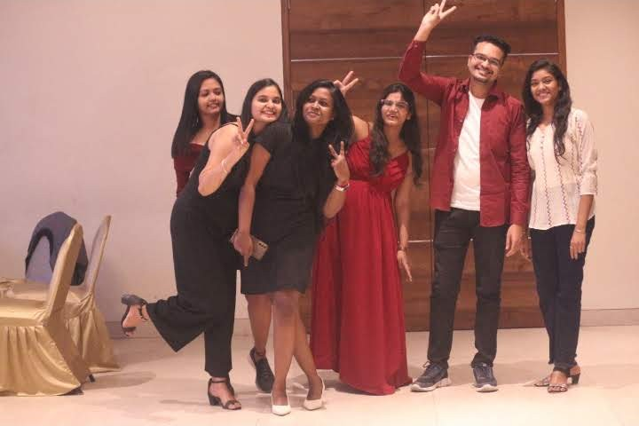
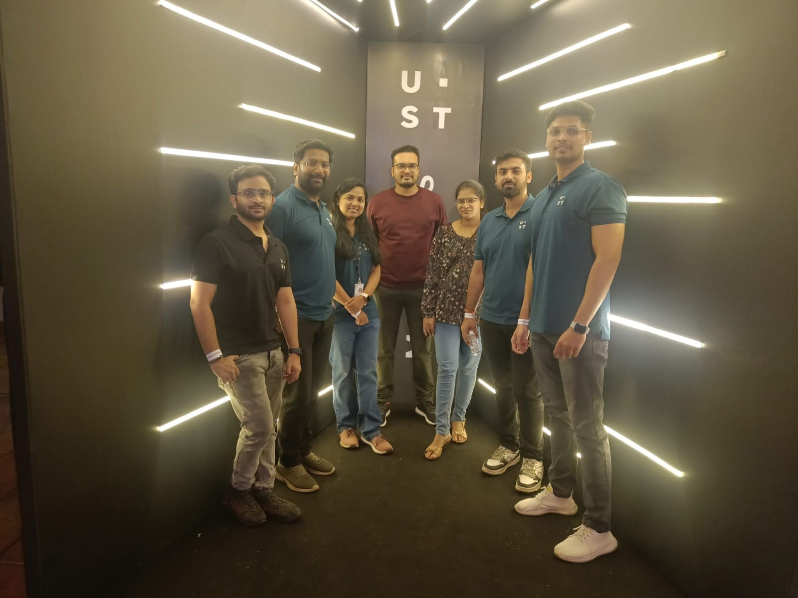
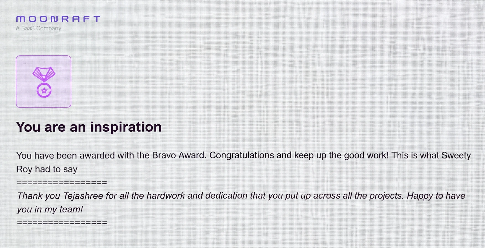

Deepika ChabukuBusiness Analyst · Former direct managerDecember 20, 2023 · Moonraft Innovation Labs
QUALITY ASSURANCE · TESTING · CREATIVITY
Curious by nature.
Precise by practice.
QA Engineer · Manual Testing · API Testing · AEM · Test Automation · ISTQB® Certified
I’m Tejashree Mule, a QA Engineer focused on thoughtful testing, dependable digital experiences, and the details that make software work beautifully. My background includes manual QA and AEM, with API testing and automation showcased through independent projects.
Previously QA Engineer at UST / Moonraft (2021–2025), working across healthcare, automotive, web, mobile, and AEM experiences.

01 / PROJECTS
Selected projects.
Selected professional work and personal QA projects.
01PROFESSIONAL · UST / MOONRAFTAnthem / IngenioRx — Healthcare QAManual QA for healthcare member-portal experiences, including provider search, plan information and benefits.Explore
02PROFESSIONAL · AUTOMOTIVEHero Motors — Website QAFunctional, regression and responsive testing for automotive digital content.Explore
03PROFESSIONAL · AEMAEM Authoring & Content ValidationHands-on authoring and validation of pages, content fragments, experience fragments and digital assets.Explore
04PERSONAL HANDS-ON PROJECT · MANUAL QAOrangeHRM — Exploratory TestingLogin-module testing with a published test plan, test-case workbook and bug-report workbook.Explore
05PERSONAL HANDS-ON PROJECT · APIFakeStore API — Postman CollectionFour product requests covering GET, POST, PUT and DELETE, with JavaScript assertions.Explore
Professional experience and personal hands-on projects are labeled separately. Public project links open my own GitHub artifacts.
02 / TECHNICAL SKILLS
Skills & expertise
Professional testing experience, with API, automation and CI/CD skills developed through personal hands-on projects.
Manual Testing
Professional- Functional, regression & smoke testing
- Exploratory testing & test design
- Test cases, defects & retesting
- Cross-browser, mobile & responsive QA
AEM & Content QA
Professional- Page, component & template validation
- Content & experience fragments
- Authoring, DAM & publishing workflows
- Content and layout checks
Tools & Delivery
Professional- Jira · qTest · Excel · Perfecto
- Agile / Scrum collaboration
- Selenium / TestNG suite execution
- Jenkins — running existing test suites
API & Automation
Personal hands-on projects- Postman — REST API validation
- Selenium + Java
- REST Assured · Playwright / TypeScript
- SQL — query validation
CI/CD & Version Control
Personal hands-on projects- CI/CD concepts & pipeline stages
- Git / GitHub version control
- Build → test → deploy workflow
- Test results & pipeline status review
Quality & Credentials
Professional- ISTQB® Foundation Level certified
- Requirements, scenarios & test coverage
- Severity, priority & release validation
- Cross-team collaboration & mentoring
IN THEIR WORDS · LINKEDIN RECOMMENDATIONS
Recommendations from colleagues
Umang Chandra JhaQA Technical Lead · Senior colleagueAugust 12, 2025
Excerpts from recommendations received on LinkedIn. Full original text is available above. Visit my LinkedIn ↗
04 / ABOUT ME
Moments & milestones.
People, places and moments that make the journey memorable.
MORE MOMENTS, ON REPEAT





Hover over the photos to pause the movement.